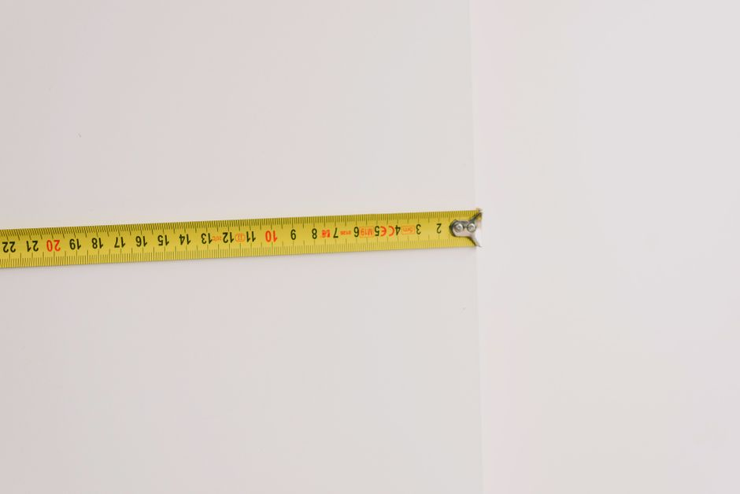

Guía paso a paso para instalar estantes en altura en tu espacio limitado
¡Estás a punto de transformar tu espacio de almacenamiento! Si tienes un área en altura que está quedando en blanco, estos pasos te ayudarán a instalar estantes en altura de manera segura y eficiente.
Photo: Tama66 / Pixabay
Herramientas y materiales necesarios
Antes de comenzar, asegúrate de tener a mano los siguientes elementos:
- Herramientas de montaje: martillo, destornillador de Phillips, nivel.
- Estantes en altura.
- Paredes de soporte: clavos, tornillos y, si es necesario, pasta de expansión.
- Medida y marcador.
Medida y planificación
Antes de comprar los estantes, mide el espacio disponible. Imagina que quieres instalar dos estantes en altura que midan 180 cm de altura y 60 cm de ancho cada uno. Mide el espacio entre el suelo y el techo para asegurarte de que los estantes se ajusten perfectamente.
Preparación de la pared

Photo: Ksenia Chernaya / Pexels
Limpia y desinfecta la pared donde colocarás los estantes. Si es necesario, apliques pasta de expansión en los huecos para que los tornillos se adhieran firmemente. Una vez que la pasta de expansión seca, aísla la pared con sellador para evitar que el polvo entre en la superficie.
Instalación de los soportes
Coloca los soportes en la pared en los puntos que hayas marcado. Utiliza un nivel para asegurarte de que estén perfectamente alineados. En el ejemplo de 180 cm de altura, podrías colocar soportes a 30 cm del suelo y a 150 cm del suelo, con una separación de 60 cm entre ambos.
Montaje de los estantes
- Instalar el primer estante: Coloca un estante en el primer soporte y asegúralo con 4 tornillos. Verifica que esté firmemente sujeto.
- Instalar el segundo estante: Repite el proceso con el segundo estante en el soporte superior.
Personalización de los estantes
Una vez que los estantes estén montados, puedes personalizarlos añadiendo divisores, estantes superpuestos o cajones. Por ejemplo, podrías colocar tres cajones de 20 cm de ancho cada uno en el segundo estante para organizar tus libros y documentos.
Mantenimiento y limpieza
Finalmente, asegúrate de que los estantes estén firmemente sujeto a la pared y que no presenten desgaste o rotura. Para mantenerlos en buen estado, limpia los estantes con un paño suave y un producto de limpieza apropiado una vez por mes.
Con estos pasos, podrás organizar tu espacio en altura de manera eficiente y estética, aprovechando al máximo el área disponible. ¡Feliz montaje!